사랑하다 사랑받다 사랑받다 사랑하다
사랑 받는 딸, 사랑 받는 연인, 모두에게 사랑 받는 내 모습. ‘사랑 받는 나’의 모습에 취해 타인의 긍정적인 피드백을 기대하고 또 바라던 때가 있었다. 평가하는 사람이 되기보다 평가 받는 사람이 되기를 자처하며, 스스로 타인의 시선에 재단되길 자처하던 나날들 이였다.. 그 속에서 내가 얻은 것은 무엇일까. 결론은 확실했다. 나에게는 의문과 공허감, 기시감 과 같은 것 뿐 이였다. 내가 진심으로 원하는 것은 무엇인가, 나의 삶은 어떠한 방향으로 가야 하는가. 나는 사랑하고 있나, 사랑하고 있나. 사랑 받고 있나, 사랑하고 있나.
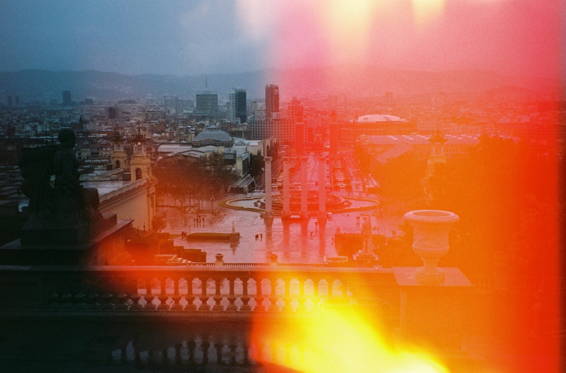
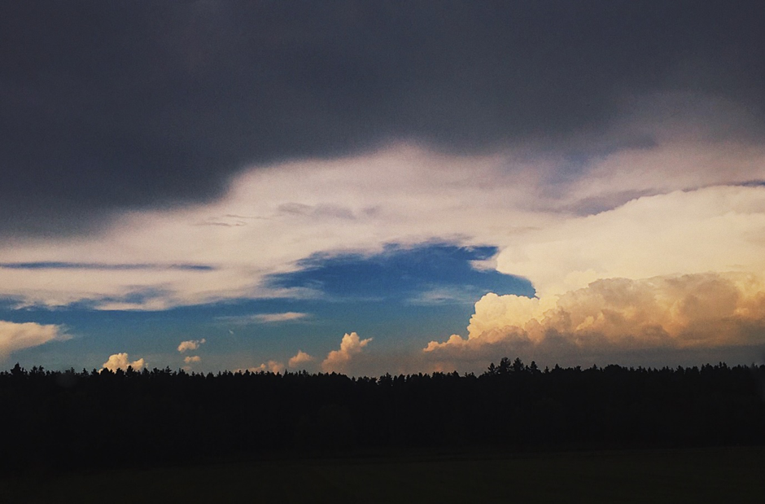

하지 않으려 떠난 여행에서 하기 시작하다, 프라하의 아이러니
“가까운데 놔두고 왜 유럽이야?”
“그냥 예뻐서요.”
삶에 대한 의무감과 공허함에 무용한 시간을 보내고 있을 때쯤, 돌연 혼자 여행을 가겠다고 선언 했다. 우연히 프라하를 소개하는 여행 프로그램을 TV에서 봤고, 그 자리에서 바로 체코 행 티켓을 샀다. 후로 아무것도 하지 않아도 되는 자유를 외치며 10개국을 여행했다. 가만히 있기로 작정한다면 그 누구의 간섭도 받지 않을 수 있는 게 바로 여행자 아닌가. 그렇게 아무것도 하지 않을 수 있는 첫 도피처 프라하는, 내가 여행한 수많은 도시들 중 가장 아름다웠고 또 평화로웠다. 이 아름다움을 어떻게 설명해보고자 했으나 도저히 말로 담을 수 없더라. 그래서 사진을 찍기 시작했다. 아무 것도 하지 않을 자유를 외치며 떠났으나, 아이러니하게도, 살면서 가장 많은 사진을 찍은 곳이 프라하였다.
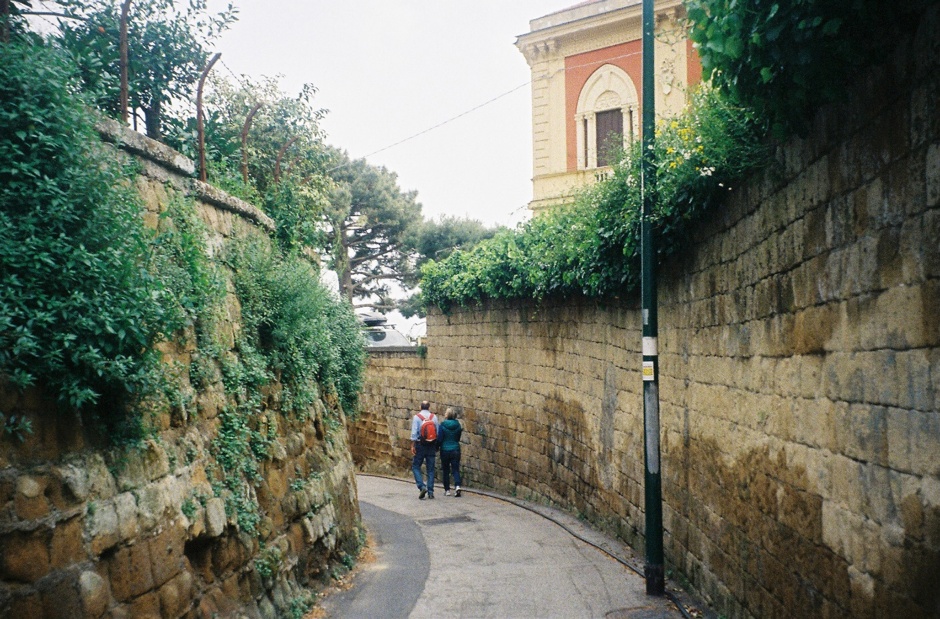
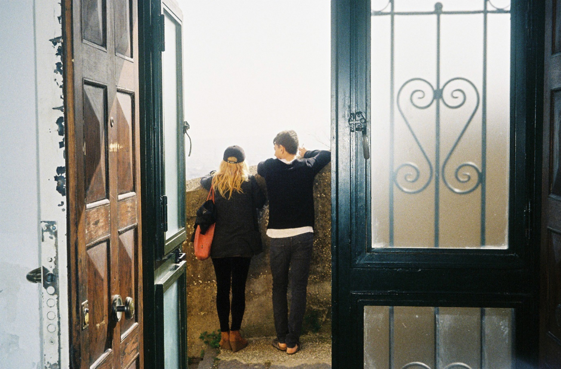
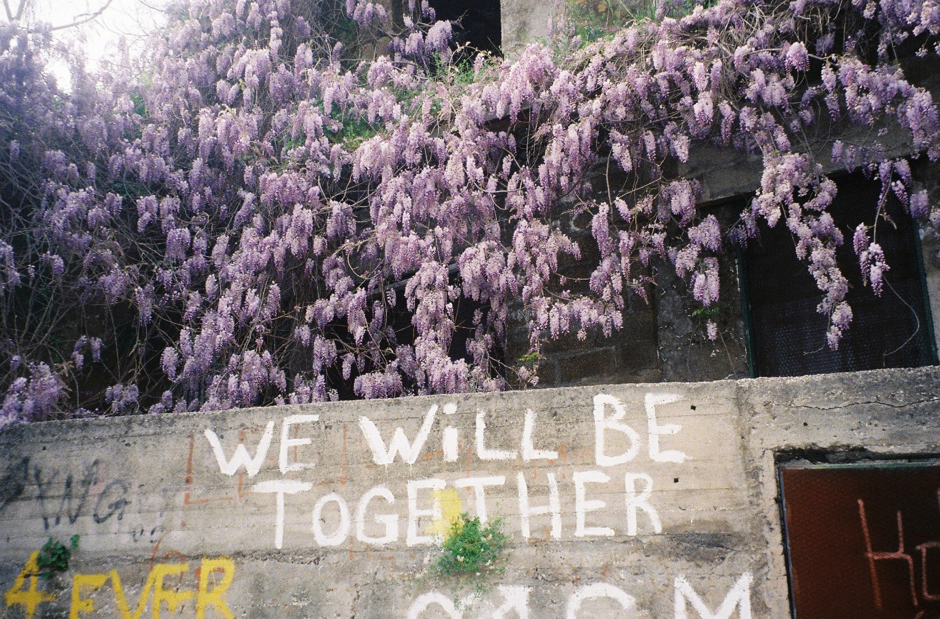
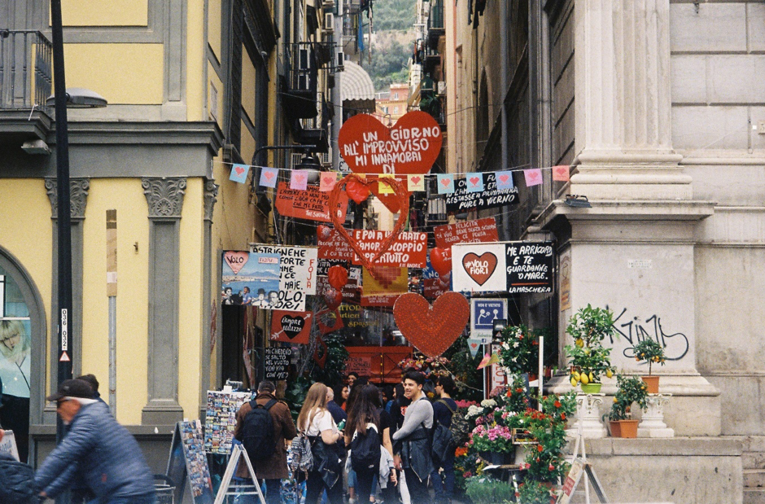
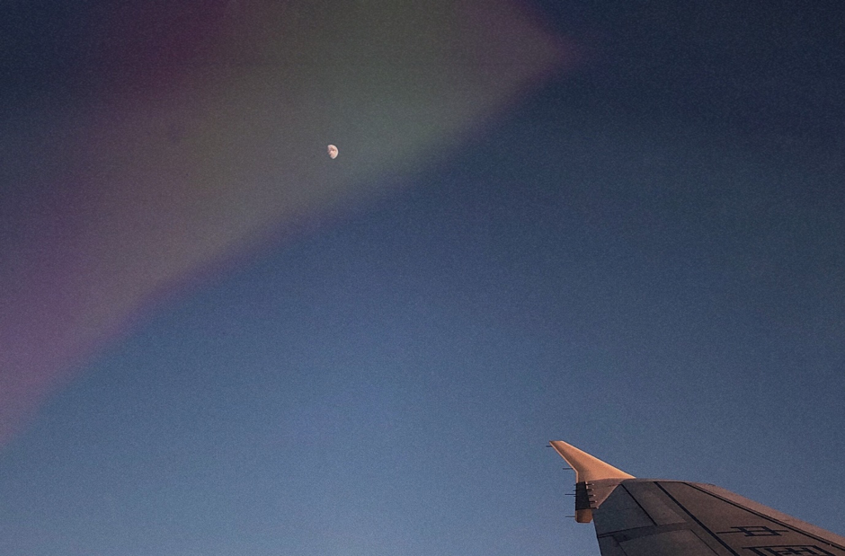
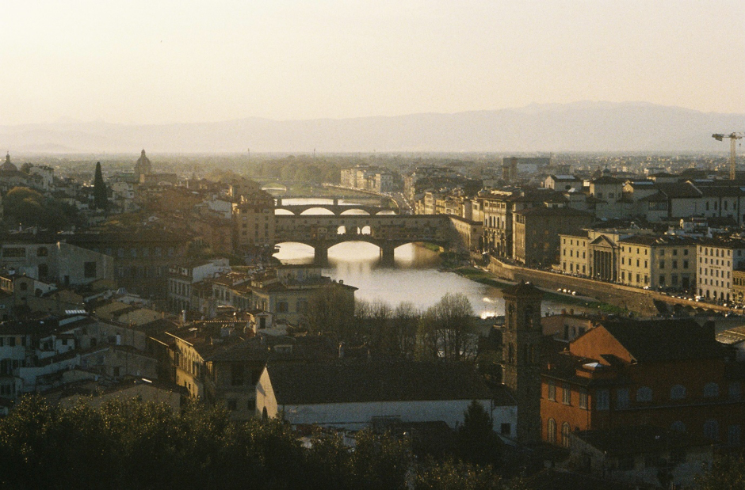
무용한 시간을 떠나서
딱히 특별한 것을 하지 않는다 해도 시간은 흘러간다. 어디로 흘러가는지 알 수 없이 그냥 흘러가는 게 시간이다. 이 시간 속을 치열하게 살아가는 와중에도 스스로에게 드는 의문은 막을 수 없었고, 이 세상과 단절되기를 바라는 마음은 팽창하다 못해 두 눈을 부릅뜨고서 나를 옥죄기도 했다.. 무용한 시간의 굴레를 벗어나는 일은 그만큼 간절해진다. 사실 생각해보면 거창할 필요가 없다. 내가 몰입하는 시간이 세계가 침묵하는 시간이다. 누구에게나 이런 시간은 필요하지 않을까? 숨겨진 다락방 혹은 아지트처럼, 일상에서 벗어나 오롯이 혼자 쉬고 또 즐길 수 있는 그런 공간. 바쁜 일상 속 정신 없는 하루를 보내면서도 상상의 나래를 펴고 사색할 수 있는 나만의 비밀 공간. 하늘이 나에게 그런 공간이다.
지금이 언제든, 그곳이 어디든. 고개만 들면 하늘이 보인다. 낯선 여행지와 일상 등지에서 마주한 여러 모습의 하늘과, 그 하늘 아래에서의 크고 작은 경험을 바탕으로 나는 비로소 내 삶의 주도권을 쥐었다. 나는 하늘을 딛고 일어섰다. 지금의 나는 무용한 시간 속의 상처를 경험이라 말 하면서, 쓰러져 있던 스스로를 일으켜 세워, 나아가는 길에 있다. 용기 내어 말한다. 일상이야 말로, 진짜 장거리 여행이나 마찬가지라고. 나는, 장거리 여행을 일상처럼 하기보다, 일상을 장거리 여행처럼 하겠다고.
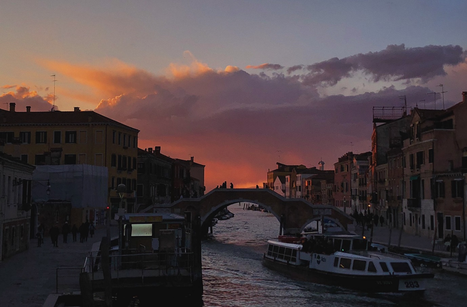
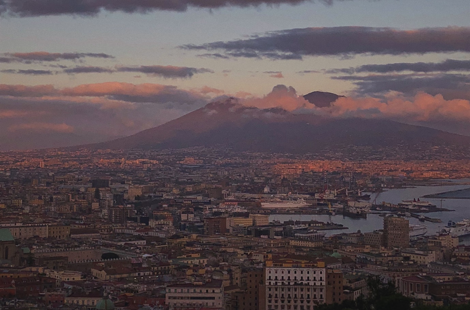
생각할 수 있는 범위 안에서 가장 완전하다고 여겨지는 공간, 하늘.나의 하늘 사진.
여행지에서 처음 찍기 시작해서, 여행지에서만 찍다가, 이제는 일상 속에서도 담아내고 있다.
어떠한 모습의 하늘도 나에게 이상이 되는 공간, 하늘. 노을이 지든, 먹구름이 가득하든,
볕이 눈부시게 내리쬐든, 어떠한 모습의 하늘이라 해도 일상 속의 다양한 순간순간을 담아내고
있다는 건 같다. 아름다움의 기준은 마음에 달렸다. 하늘의 아름다움처럼,
모든 건 마음먹기 나름임을 잊지 않고 살아가려 한다.
프라하에서 돌아와 처음으로 사진을 인화했다. 누군가는 흔한 풍경사진 같아 보인다고도 하겠지만, 나에게는 그 이상이었다. 비록 그때의 그 이상적인 아름다움에는 근처에도 닿지도 못했지만 말이다. 처음으로 혼자 떠났던 여행, 나만의 사색의 다락방이자 비밀 일기장. 이제는 지난 일이 되어버렸지만 그날의 감정과 날씨 그리고 온도 하나하나는 사진에 담겨있다. 오늘도 나는, 빈약한 나의 언어와 조약한 마음을 대신하여 사진을 내밀어본다.
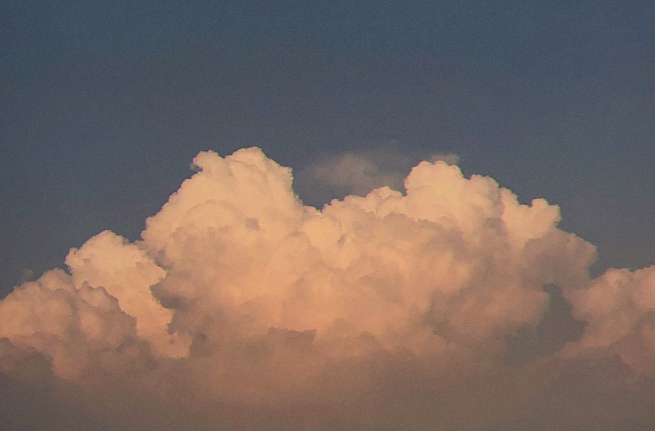
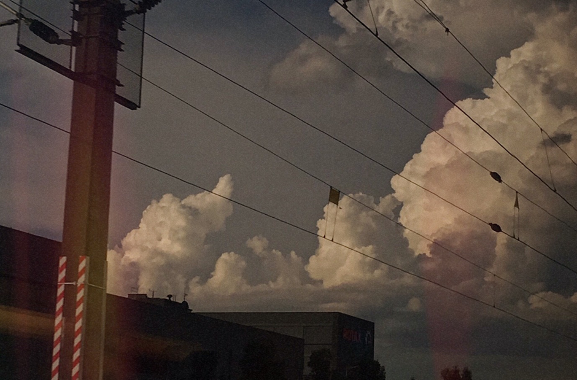
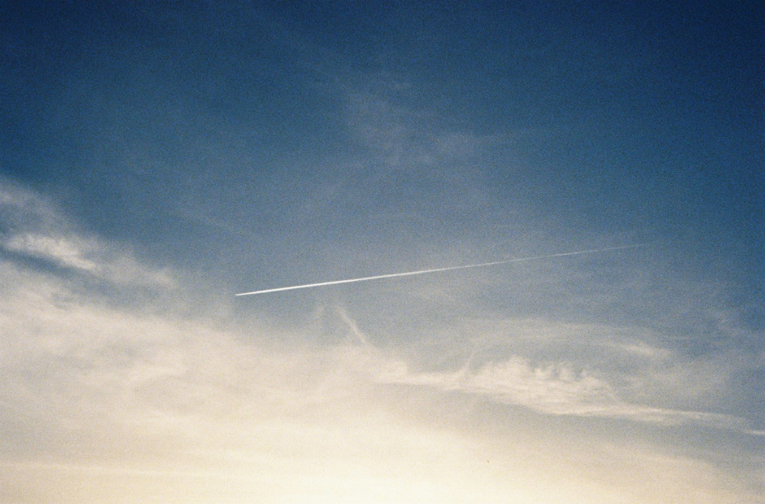
The Cloud Appreciation Society
색다른 사이트를 하나 추천하겠다. 하늘을 좋아하는 사람들이 모여서 만든 사이트이다. 다양한 사람들의 다양한 관점들이 얼마나 귀엽고 멋있는지, 한번 들어가면 시간 가는지 모른다. 연회비로 운영되는 회원제도 있다.
-하늘의 사진과 비디오 그리고 음악과 시
-하늘 명소로 알려진 곳으로의 여행 : Bolivia, Canada, Finland
-태양카메라, 구름 모양 귀걸이, 번개 모양 브로치, 우산 등 하늘과 관련한 굿즈